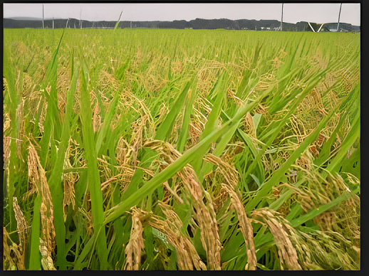

14 Jul 2025
Waspadai Serangan Blast Padi di Musim Hujan yang Semakin Ekstrem
Penyakit blast yang disebabkan jamur Pyricularia oryzae meningkat drastis saat kelembaban tinggi di musim hujan. Para petani dihimbau untuk selalu memeriksa kondisi daun secara berkala dan memastikan drainase sawah berjalan dengan baik.